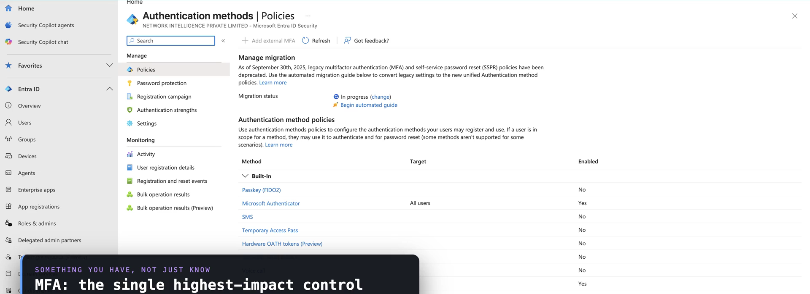
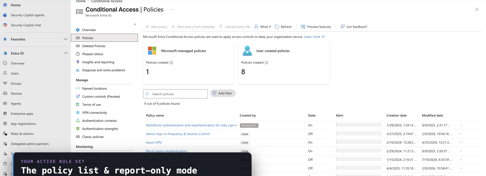
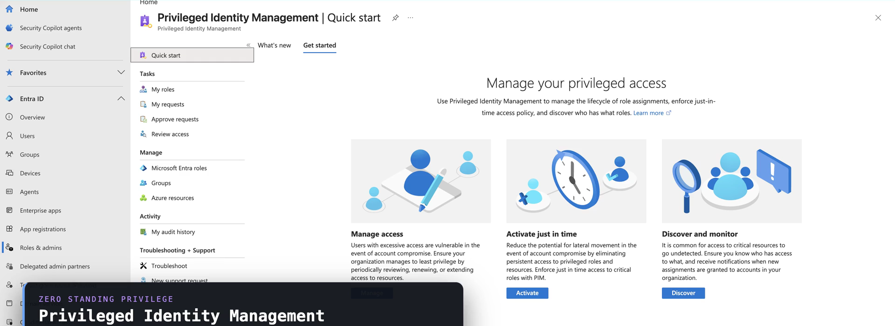

SC-100 · Domain 2 — Identity & Access
Identity &
Privileged Access
Identity is the new perimeter. Two linked halves: prove trust for every identity, then wrap the few who can change the environment in stronger controls.
VERIFY → GOVERN → ISOLATE
Identity & access managementNETWORK INTELLIGENCE · SC-100
Entra ID as the centralized control plane
One identity plane for every resource
Centralize authentication, single sign-on, and policy in Microsoft Entra ID — across SaaS, PaaS, IaaS, on-premises, and multicloud. Design three control surfaces together.
I
Identity
Who authenticates, and how — sign-in method, MFA, the policy decision.
+
N
Networking
Where they connect from — Global Secure Access, Private and Internet Access.
+
A
App controls
Consent, app roles, and app protection on the resource side.
Privileged access is a separate, harder problem. Not a tier of normal IAM — design it on its own.
Hybrid & external identitiesNETWORK INTELLIGENCE · SC-100
Choose the sign-in method by dependency
PHS is the resilient default
portal.azure.com — Microsoft Entra · Authentication methods

Grounded · AZ-500 · Entra Authentication
Hybrid & external, by design
PHS has no on-premises dependency at auth time — the simplest, most resilient choice. Federation only when smartcard or on-prem MFA demands it; PHS can fall back for it.
External: distinguish B2B collaboration (guest accounts) from Verified ID — decentralized issuer-holder-verifier credentials.
Modern authentication & authorizationNETWORK INTELLIGENCE · SC-100
Conditional Access, risk, CAE, protected actions
Verify explicitly, in real time
Grounded · AZ-500 · Conditional Access
The policy engine, aligned to Zero Trust
Conditional Access weighs user, device, location, app, and risk from ID Protection. CAE revokes access in near real time on critical events — not a token-lifetime tweak.
Protected actions guard control-plane operations. Validate at three levels: block legacy auth, enforce device compliance, privileged accounts at Enterprise minimum.
portal.azure.com — Microsoft Entra · Conditional Access

Harden AD DS · secrets, keys, certificatesNETWORK INTELLIGENCE · SC-100
Protect the directory and the cryptographic material
Reduce dependence, centralize secrets
- Harden Active Directory Domain Services — it is Tier 0. Reduce reliance on it, favor PHS and certificate-based auth, and protect the synchronization path.
- Centralize secrets, keys, and certificates in Azure Key Vault, or Managed HSM for FIPS-validated hardware protection.
- Prefer managed identities over stored secrets — shrink the secret surface to nothing where you can.
- Use Azure RBAC, not legacy access policies; the Contributor role is a control-plane risk — it can grant itself data-plane access.
- Store certificates as certificate objects, set expiry, rotate, and enable soft delete and purge protection.
Securing privileged accessNETWORK INTELLIGENCE · SC-100
The enterprise access model — the design backbone
Never control a higher plane from a lower one
C
Control plane
Identity systems and the access control over everything — Active Directory, Entra ID, the roles that configure them.
›
M
Management plane
Enterprise-wide IT management functions that operate the estate.
›
D
Data / workload plane
Where business value lives — applications, intellectual property, data.
Privileged access is the only path into the control plane. Strategy = four initiatives: session security, protect identity systems, mitigate lateral traversal, rapid response.
Entra governance for privileged accessNETWORK INTELLIGENCE · SC-100
Eligible, not standing
Eliminate standing privilege
portal.azure.com — Microsoft Entra Privileged Identity Management

Grounded · AZ-500 · Entra PIM
Govern the few who hold the keys
PIM makes roles eligible, time-bound, approval-gated, MFA-required, and logged. Entitlement management packages access with approval and expiry.
Access reviews re-attest privileged roles periodically. Assign least privilege at the narrowest scope — fine-grained roles over Global Administrator.
Isolate the path · right-size entitlementsNETWORK INTELLIGENCE · SC-100
PAW, remote brokering, and CIEM
The only trusted path in
- Privileged access workstations are the only trusted entry to the control plane — dedicated, hardened, no email, no browsing, no local admin, compliance-gated.
- Broker remote admin through controlled intermediaries — Azure Bastion and Entra Private Access, not broad VPN.
- CIEM right-sizes multicloud entitlements across Azure, AWS, and GCP — surfacing super identities, inactive identities, and lateral paths.
- Secure tenant admins with break-glass accounts, phishing-resistant MFA, and continuous monitoring to Sentinel.
Product change: Entra Permissions Management is retired — CIEM now lives in Microsoft Defender for Cloud.
RememberNETWORK INTELLIGENCE · SC-100
Identity & Privileged Access in five rules
The identity control plane
- 1 · Centralize on Entra ID; design identity, networking, and app controls together — PHS is the resilient hybrid default.
- 2 · Modern auth = Conditional Access + risk + CAE; protected actions guard control-plane operations.
- 3 · Use the enterprise access model — never control a higher plane from a lower one.
- 4 · PIM eliminates standing access; CIEM right-sizes multicloud entitlements — they are not the same.
- 5 · The PAW is the only trusted path to the control plane; privileged access is a separate, harder design problem.
Hands-on · 1 of 2NETWORK INTELLIGENCE · SC-100
Do this
Map admin roles to the access model
GOAL · Place every privileged role and convert standing access to eligible
- List your privileged roles and place each on the control, management, or data-workload plane.
- Any role that configures identity or access is control plane — it earns PIM, PAW, and protected actions.
- Take your three highest-impact roles, starting with Global Administrator, and in PIM make them eligible — time-bound, approval-required, MFA-required.
✓ DONE WHEN · No standing Global Administrators remain, and misplaced roles are flagged as design gaps
Hands-on · 2 of 2NETWORK INTELLIGENCE · SC-100
Do this
Validate one path against Zero Trust
GOAL · Prove the difference between "MFA exists" and "aligned with Zero Trust"
- Pick one sensitive application and trace its access path end to end.
- Confirm legacy auth is blocked, MFA is required, device compliance is enforced, a risk-based policy exists, and CAE is on.
- Any missing link is a Conditional Access design gap.
✓ DONE WHEN · Every link in the chain is present, or the gap is written down as the next design fix